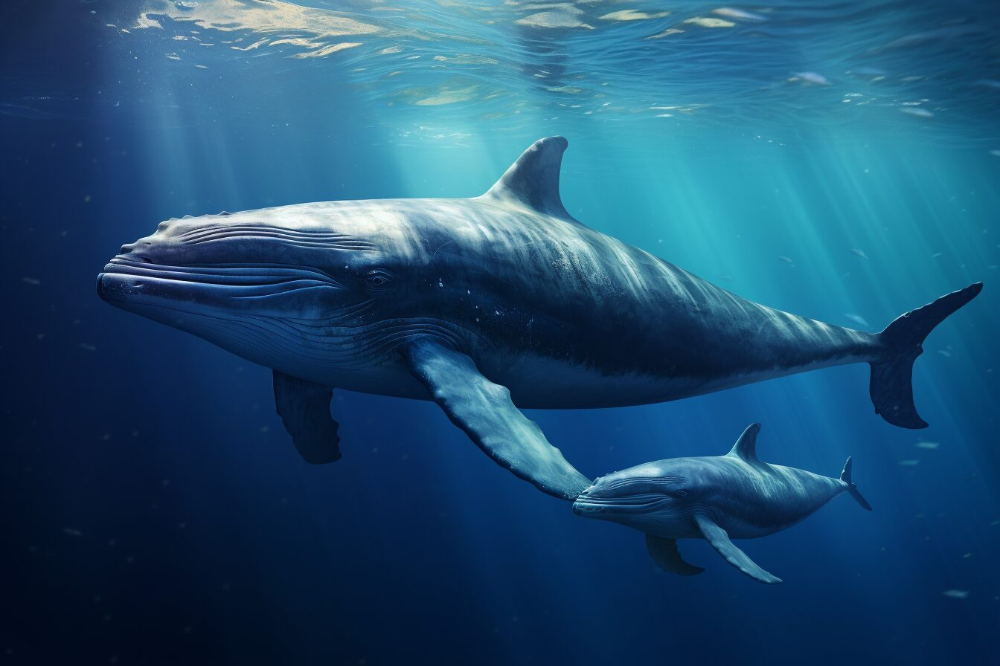
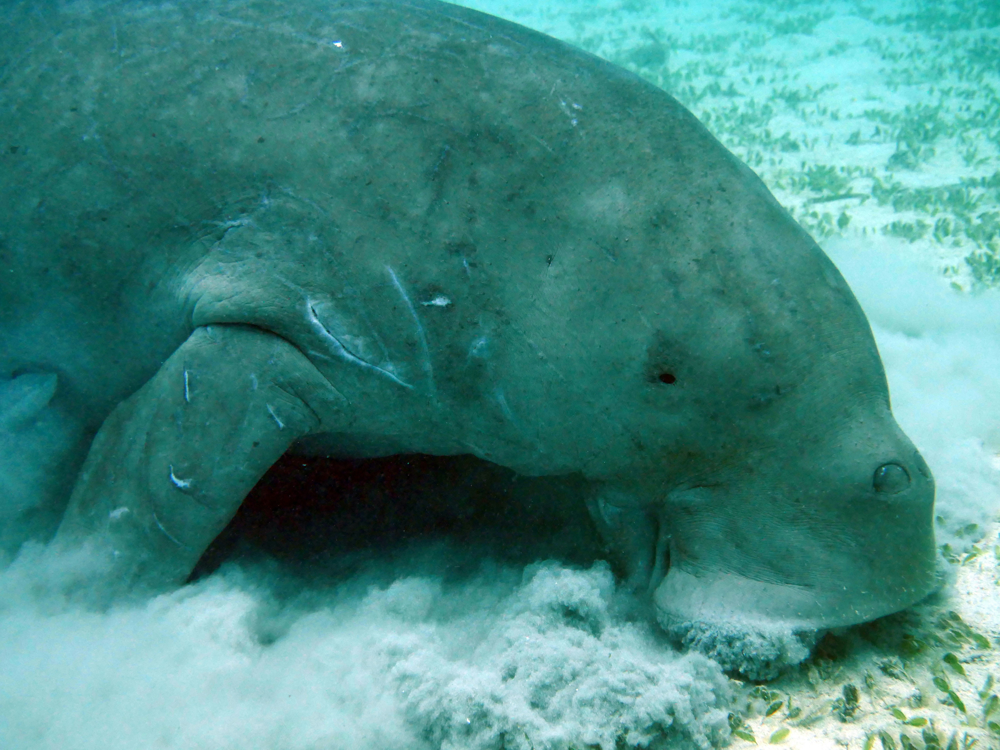
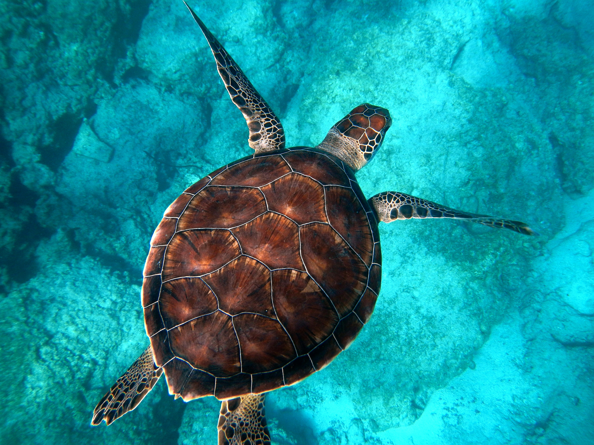
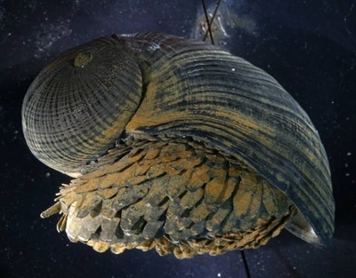
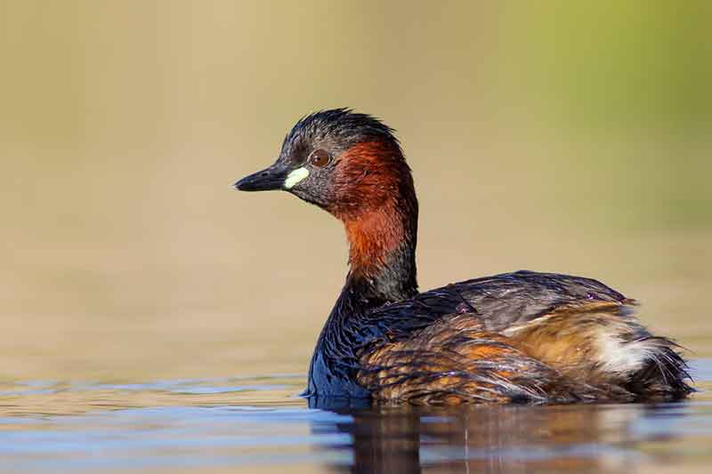
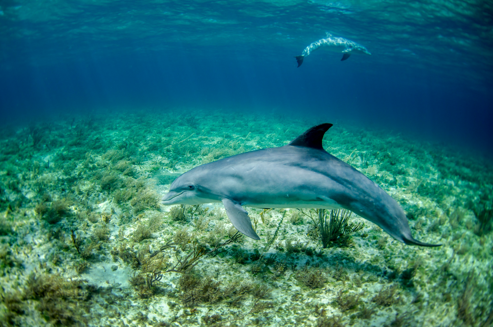

Water, housing up to a million organisms, serves as the vital essence of our planet. The vast expanse of water bodies makes it nearly impossible to fathom the precise diversity of species inhabiting them. Oceans, covering 71 percent of the Earth's surface, largely remain uncharted, unexplored, and unseen.
Among the myriad of species known to humanity, there are several fascinating creatures that never fail to astonish.

The Blue whale, a marine mammal and a baleen whale, holds the distinction of being the largest creature ever known to exist. Once abundant across nearly all of Earth's oceans until the late 19th century, it boasts a long, slender body with a grayish-blue hue on its upper side and a lighter shade underneath, appearing as a mesmerizing blue-gray underwater. Blue whales are renowned for their incredible vocal abilities, emitting calls that reach up to 188 decibels, surpassing the volume of a jet engine. Remarkably, they possess a heart comparable in size to a Volkswagen Beetle, and their low-frequency whistles can carry for hundreds of miles.

The dugong stands as the sole representative of sirenians within its range, which encompasses the waters of approximately 40 countries and territories across the Indo-West Pacific region. Relying heavily on seagrass communities for sustenance, the dugong is primarily confined to coastal habitats that support these vital meadows. Typically, the largest concentrations of dugongs are found in expansive, shallow, and sheltered areas such as bays, mangrove channels, the waters surrounding large inshore islands, and inter-reefal waters. It's believed that the northern waters of Australia, spanning from Shark Bay to Moreton Bay, serve as the contemporary stronghold for these remarkable creatures.

The Green sea turtle, scientifically known as Chelonia mydas, belongs to the family Cheloniidae and is recognized for its substantial size. Contrary to what its common name suggests, the term "green" refers to the typically verdant fat found beneath its carapace, rather than the color of its carapace itself, which ranges from olive to black. This species, also referred to as the green turtle, black turtle, or Pacific green turtle, is the sole member of the genus Chelonia. It inhabits tropical and subtropical waters worldwide, with distinct populations residing in the Atlantic and Pacific Oceans, as well as the Indian Ocean. The green sea turtle's diet primarily consists of seagrass, contributing to the green hue of its internal fat deposits.
Much like numerous other creatures, the box crab demonstrates exceptional skill in camouflage. This crustacean, primarily dwelling on the seabed, adeptly conceals itself beneath the sand, leaving only its eyes exposed above the murky depths. Among the most intriguing aspects of the box crab's life cycle are its mating rituals, which redefine conventional notions of courtship. Upon locating a mate, the male box crab seizes her with its claws and transports her across the sea floor until she undergoes the molting process to shed her shell.

The Crysomaallon squamiferum is a unique snail species unlike any other in the world, distinguished by its armored shell. Inhabiting hydrothermal vents deep within the Indian Ocean, it is known by various names including the "scaly-foot gastropod," "scaly-foot snail," and even the "sea pangolin." The habitat of these snails is extraordinarily harsh, situated several miles below the ocean surface on scorching hydrothermal vents. These vents emit toxic chemicals and can reach temperatures exceeding 300C (572F).

The little grebe, also known as the dabchick, belongs to the grebe family of water birds. Its genus name originates from Ancient Greek, with "takhus" meaning "fast" and "bapto" meaning "to sink under." Measuring between 23 to 29 centimeters (9 to 11 inches) in length, it holds the title of the smallest European member of its family. This bird is typically found in open bodies of water throughout most of its range.

The dusky dolphin, a species found in coastal waters of the Southern Hemisphere, earns its specific epithet from the Latin term meaning "dark" or "dim." Its distribution is somewhat sporadic, with significant populations residing around South America, southwestern Africa, New Zealand, and various oceanic islands. Additionally, sightings have occurred around southern Australia and Tasmania. Preferring cool currents and inshore waters, the dusky dolphin is also known to venture offshore. It sustains itself by feeding on a variety of fish and squid species, employing adaptable hunting strategies. Renowned for its remarkable acrobatics, the dusky dolphin exhibits numerous aerial behaviors. The conservation status of this dolphin remains uncertain, yet it has often fallen victim to incidental capture in gill nets.